How to Install a CentOS 7 Minimal Server

文章目录
本文描述了安装CentOS 7 系统的过程。目的是在生产服务器上安装一套最小化系统，作为其他大型服务搭建的基础。
准备工作
U盘启动制作
- 下载最新版本的Centos7 镜像，当前为7.8版本。
- U盘一个，大于8G。
- U盘启动制作工具，推荐rufus，详细使用方法网站上有。
更新服务器(可选)
在安装新的操作系统之前，可以更新服务器固件以充分利用所有功能，具体方法查看官网。
从支持网站下载戴尔操作系统驱动程序包。
- 访问支持网站，输入您系统的服务标签，或单击“Browse all products”并选择您的产品。
- 单击“DRIVERS and DOWNLOADS”选项卡，将“Dell OS Driver Pack”键入关键字框中，接着下载戴尔操作系统驱动程序包，然后将其上传到 iDRAC 的“update and rollback”部分。
安装源选择
要安装操作系统，必须为服务器提供源介质。安装文件可通过以下方式提供：
- DVD 光驱、
- USB设备
- PXE网络引导
- 安装的ISO文件（通过iDRAC虚拟介质）
我们这里使用通过USB安装
U盘引导安装
具体执行步骤如下：
- 将U盘插入服务器前置USB口，或者后置口
- 在引导过程中按F11以选择引导设备，这里从USB启动
系统安装过程
如果U盘制作没问题，或者引导正确，会进入安装界面，选择 Install CentOS Linux 7
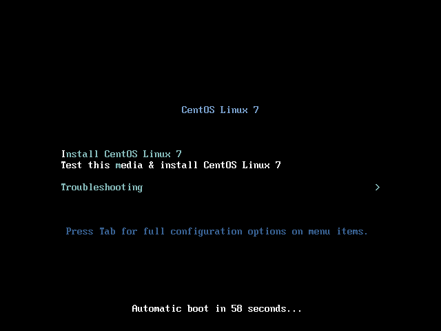
完全启动之后会进入配置界面
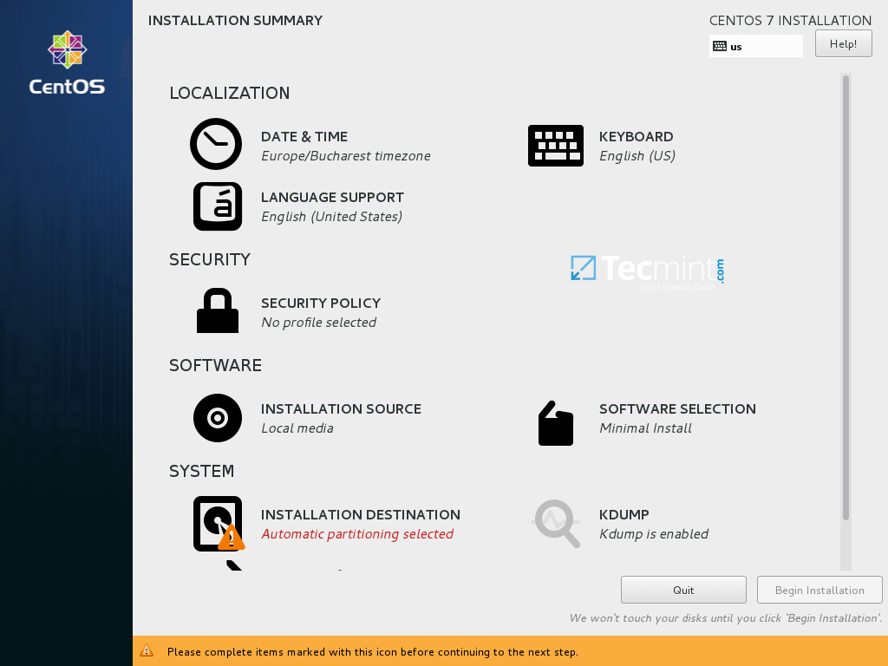
需要配置的选项有：时区时间、系统安装位置，其他的默认就行，需要定制的请自行研究。
时区选择界面，国内的话选择东八区上海就行
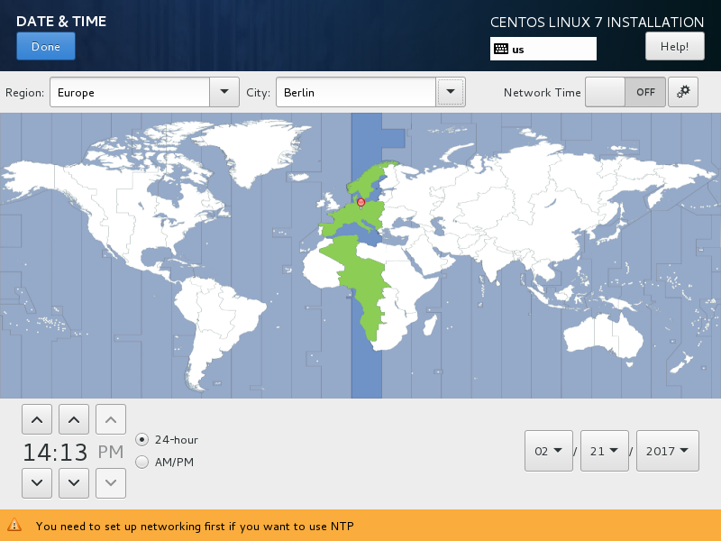
系统安装位置
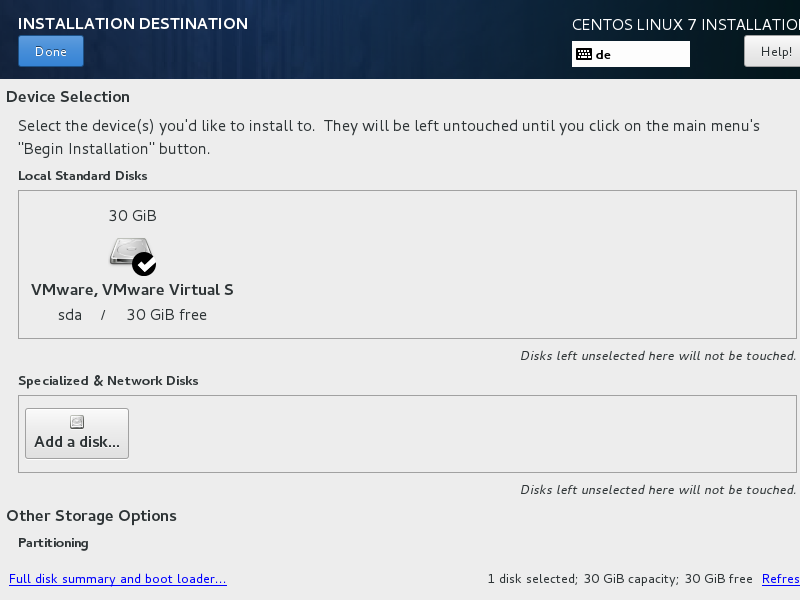
图片中只有一块儿30G的硬盘，实际服务器中会有很多的硬盘，一般会将硬盘做成两组RAID，一组安装系统，一组数据存储；选择需要安装系统的RAID盘，假设这个磁盘大小为500G。
利用LVM新建系统，默认会分配四个分区，分别为 / , /boot/efi，/home，以及swap分区，我会重新分配存储，给根目录100G，swap大小为内存的一半（如果内存特别大，最大16G估计够了，不够后期再加），其他默认，剩下的容量全部分配给home目录，至少还剩400G左右。如果懒得分，默认也行。
系统分配好后，回到配置界面，如果没问题了，就选择下一步开始安装。在安装过程界面会有设置用户密码的选项，记得把root密码配置好。
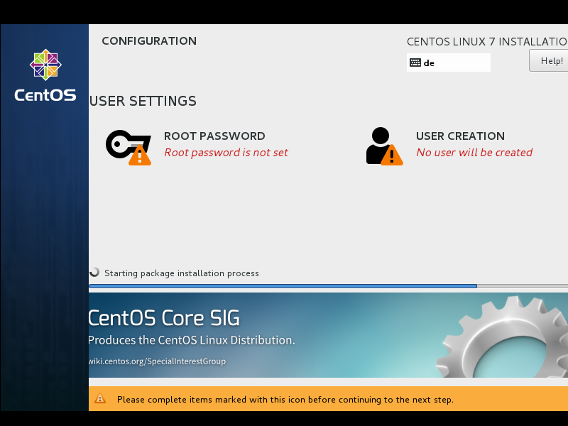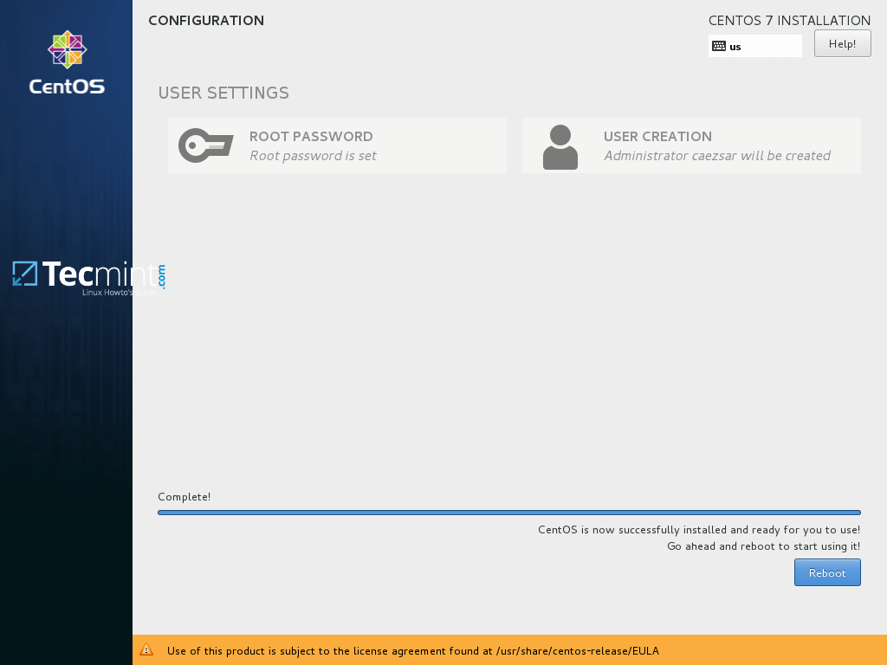
等待系统安装完成，按重启按键，正常情况下就能顺利进入安装好的系统了，在命令行登录界面输入root的用户名密码登录系统。
系统初始化配置
切记在系统配置好安全设置之前不要优先配置网络！！！
-
关闭selinux
selinux 开启之后限制太多，没有深入研究之前建议直接关闭
1 2 3 4 5 6setenforce 0 vi /etc/selinux/config 修改SELINUX的值（enforcing为开启，disabled为关闭) SELINUX=disabled 注意：别错误修改SELINUXTYPE的值为disabled，误改会导致系统无法启动 -
SSH配置
ssh最基本的安全配置就是修改默认登录端口，禁止root直接登录，有条件的还可以设置禁止密码登录，只能使用公钥登录。
1 2 3 4 5 6 7vi /etc/ssh/sshd_confg 修改 Port xxx PermitRootLogin no UseDNS no systemctl restart sshd //重启sshd服务让配置生效 -
防火墙配置
开启系统防火墙，centos 7 使用的是 firewalld，一般配置文件在/etc/firewalld/zones/public.xml，可以手动修改，也可以通过命令行
1 2 3 4 5 6启动firewalld并设为开机自启，执行如下指令： systemctl start firewalld.service systemctl enable firewalld.service 记得将ssh端口添加到规则： firewall-cmd --permanent --zone=public --add-port=xxx/tcp firewall-cmd --reload -
创建登录账户
由于我们禁止了root的直接登录，所以需要创建一个能够登录的普通账户
1 2useradd jack passwd jack -
配置并启动网络
1 2 3 4 5 6 7 8 9 10 11 12 13 14 15 16 17 18 19 20 21 22 23 24 25 26 27cd /etc/sysconfig/network-scripts/ vi ifcfg-em1 TYPE=Ethernet PROXY_METHOD=none BROWSER_ONLY=no BOOTPROTO=static DEFROUTE=yes IPV4_FAILURE_FATAL=no IPV6INIT=yes IPV6_AUTOCONF=yes IPV6_DEFROUTE=yes IPV6_FAILURE_FATAL=no IPV6_ADDR_GEN_MODE=stable-privacy NAME=em1 UUID=xxxx DEVICE=em1 ONBOOT=yes IPADDR=IP地址 NETMASK=子网掩码 GATEWAY=网关 IPV6ADDR=IPv6地址 IPV6_DEFAULTGW=IPv6网关 DNS1=223.5.5.5 DNS2=114.114.114.114 systemctl restart network -
更新系统
1 2 3 4 5 6 7 8 9 10 11查看当前系统版本 cat /etc/*release* 安装EPEL源（可选） yum -y install epel-release 更新系统 yum update 更新系统之后，条件允许下重启系统 reboot -
增加swap分区（可选）
正如前面所说，如果安装系统的时候swap分配小了，可以手动增加一些
1 2 3 4 5 6 7 8 9 10 11 12 13 14 15 16 17 18 19 20 21 22 23查看当前分区情况 free -m 增加 swap分区，容量为1GB dd if=/dev/zero of=/var/swap bs=1024 count=1024000 设置交换文件 mkswap /var/swap 立即激活启用交换分区 swapon /var/swap 添加系统引导时自启动运行 vi /etc/fstab 添加一行 /var/swap swap swap defaults 0 0 如果不需要了，收回 swap 空间 swapoff /var/swap 从文件系统中回收 rm /var/swap
DELL 服务器 RAID 配置
-
在系统启动期间，按F2键进入System Setup（系统设置）。
-
单击Device Settings（设备设置）。 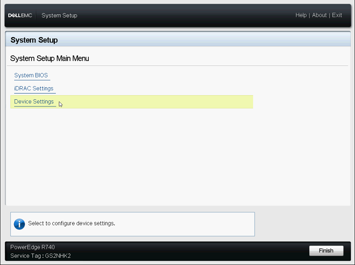
图1：System Setup（系统设置）主菜单
-
单击所需的RAID controller（RAID控制器）设备。 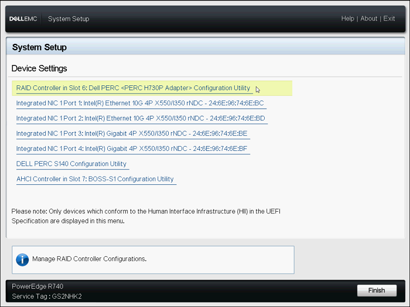
图2：Device（设备）菜单
-
单击Configuration Management（配置管理）。 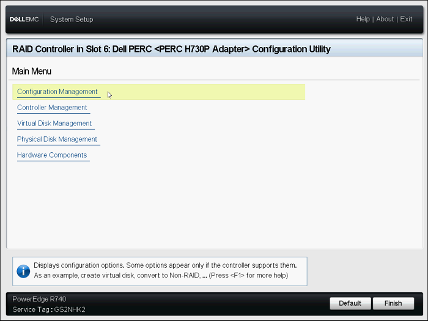
图3：Configuration Utility（配置实用程序）主菜单
-
单击Create Virtual Disk（创建虚拟磁盘）。 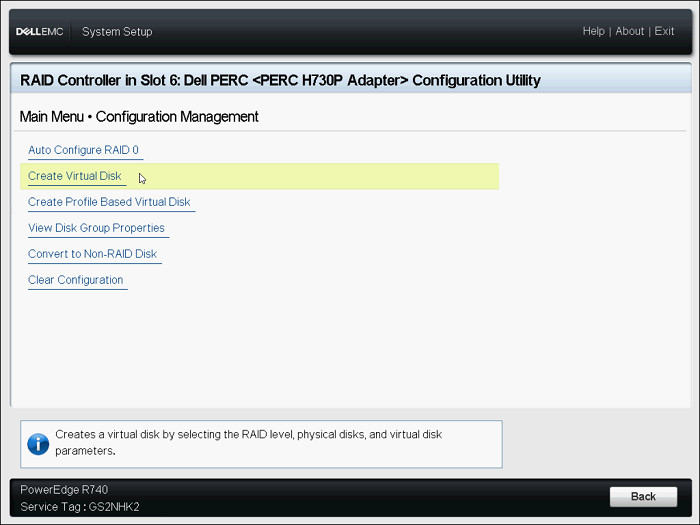
图4：Configuration Management（配置管理）菜单
-
现在会显示下面的选项列表以定义虚拟磁盘参数：
-
Select RAID level（选择RAID级别）— 允许您选择所需的RAID级别。
-
Secure Virtual Disk
（安全虚拟磁盘）— 如果您要创建受保护的虚拟磁盘，请选择Secure Virtual Disk（安全虚拟磁盘）。
注：仅当安全密钥已配置时，Secure Virtual Disk（安全虚拟磁盘）选项默认才会处于启用状态并已选中。仅会列出SED物理磁盘。
-
Select Physical Disks From
（从以下选项中选择物理磁盘）— 可让您选择物理磁盘容量之一：
- Unconfigured Capacity（未配置的容量）：在未配置的物理磁盘上创建虚拟磁盘。
- Free Capacity（可用容量）：利用已是虚拟磁盘的一部分未使用的物理磁盘容量。
-
Select Physical Disks（选择物理磁盘）— 如果您要选择从中创建虚拟磁盘的物理磁盘，请单击Select Physical Disks（选择物理磁盘）。如果您选择Unconfigured Capacity（未配置的容量）作为物理磁盘容量，则会显示此选项。
-
Select Disk Groups（选择磁盘组）— 如果您要选择从中创建虚拟磁盘的磁盘组，请单击Select Disk Group（选择磁盘组）。如果您选择Free Capacity（可用容量）作为物理磁盘容量，将会显示此选项。
-
Configure Virtual Disk Parameters（配置虚拟磁盘参数）— 允许您在创建虚拟磁盘时设置虚拟磁盘参数。
-
-
单击Select Physical Disks（选择物理磁盘）。 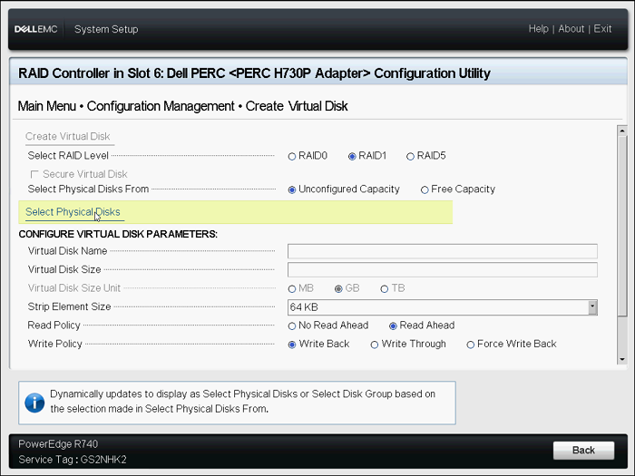
图5：Create Virtual Disk（创建虚拟磁盘）菜单
-
选择所需的驱动器，然后单击Apply Changes（应用更改）。 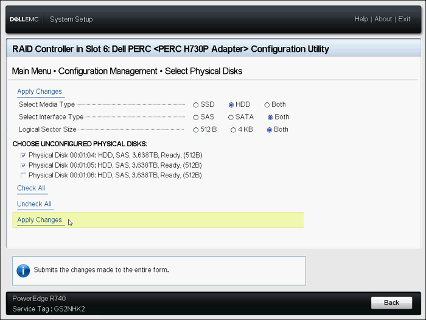
图6：选择驱动器
-
成功执行该操作后，单击OK（确定）。
-
命名新的虚拟磁盘，然后选择所需的设置。
-
单击Create Virtual Disk（创建虚拟磁盘）。 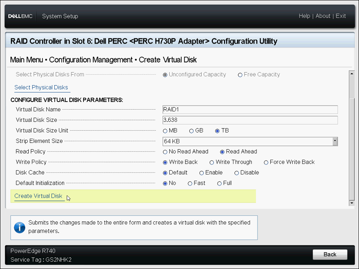
图7：Create Virtual Disk（创建虚拟磁盘）
-
选择Confirm（确认），然后单击Yes（是）。
-
此时便已成创建虚拟磁盘。单击OK（确定）
-
需要配置多个RAID盘，请重复步骤。